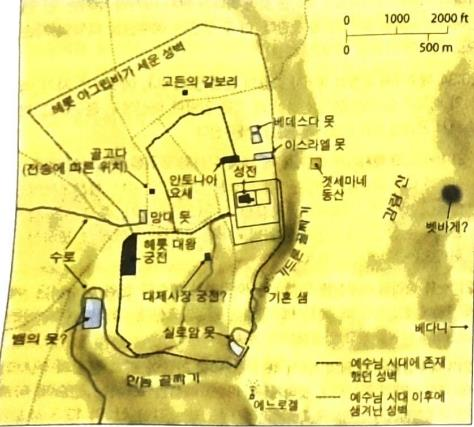
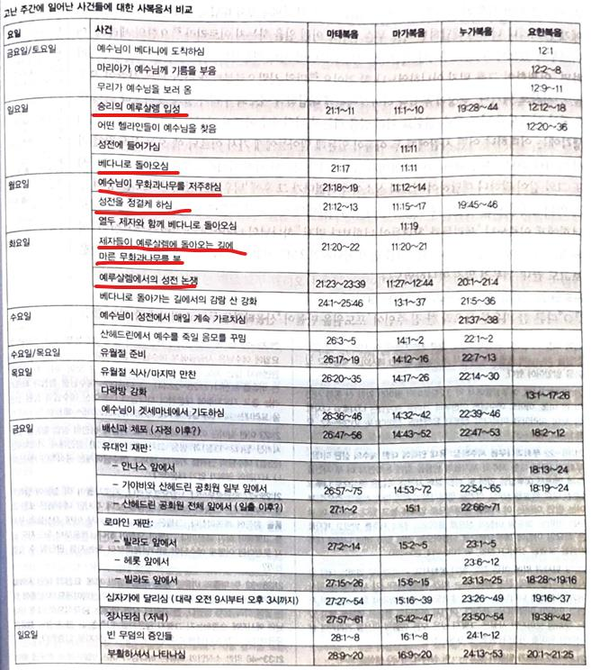

1그들이 예루살렘에 가까이 가서 감람 산 벳바게에 이르렀을 때에 예수께서 두 제자를 보내시며
2이르시되 너희는 맞은편 마을로 가라 그리하면 곧 매인 나귀와 나귀 새끼가 함께 있는 것을 보리니 풀어 내게로 끌고 오라
3만일 누가 무슨 말을 하거든 주가 쓰시겠다 하라 그리하면 즉시 보내리라 하시니
4이는 선지자를 통하여 하신 말씀을 이루려 하심이라 일렀으되
5시온 딸에게 이르기를 네 왕이 네게 임하나니 그는 겸손하여 나귀, 곧 멍에 메는 짐승의 새끼를 탔도다 하라 하였느니라
6제자들이 가서 예수께서 명하신 대로 하여
7나귀와 나귀 새끼를 끌고 와서 자기들의 겉옷을 그 위에 얹으매 예수께서 그 위에 타시니
8무리의 대다수는 그들의 겉옷을 길에 펴고 다른 이들은 나뭇가지를 베어 길에 펴고
9앞에서 가고 뒤에서 따르는 무리가 소리 높여 이르되 호산나 다윗의 자손이여 찬송하리로다 주의 이름으로 오시는 이여 가장 높은 곳에서 호산나 하더라
호산나=오, 구원하소서, 도와주세요
10예수께서 예루살렘에 들어가시니 온 성이 소동하여 이르되 이는 누구냐 하거늘
11무리가 이르되 갈릴리 나사렛에서 나온 선지자 예수라 하니라
12예수께서 성전에 들어가사 성전 안에서 매매하는 모든 사람들을 내쫓으시며 돈 바꾸는 사람들의 상과 비둘기 파는 사람들의 의자를 둘러 엎으시고
13그들에게 이르시되 기록된 바 내 집은 기도하는 집이라 일컬음을 받으리라 하였거늘 너희는 강도의 소굴을 만드는도다 하시니라
14맹인과 저는 자들이 성전에서 예수께 나아오매 고쳐주시니
율법에 의해 장애인은 성전에 들어올 수 없었으므로 여기서 예수님은 관계자들을 내쫓고 금지되었던 사람들을 성전 안에서 치유한 것
15대제사장들과 서기관들이 예수께서 하시는 이상한 일과 또 성전에서 소리 질러 호산나 다윗의 자손이여 하는 어린이들을 보고 노하여
16예수께 말하되 그들이 하는 말을 듣느냐 예수께서 이르시되 그렇다 어린 아기와 젖먹이들의 입에서 나오는 찬미를 온전하게 하셨나이다 함을 너희가 읽어 본 일이 없느냐 하시고
시8:2 주의 대적으로 말미암아 어린 아이들과 젖먹이들의 입으로 권능을 세우심이여 이는 원수들과 보복자들을 잠잠하게 하려 하심이니이다
17그들을 떠나 성 밖으로 베다니에 가서 거기서 유하시니라
가까운 관계였던 나사로와 마리아 마르다의 집에 유하셨을 듯(눅10:38, 요11:1,12:1)
18이른 아침에 성으로 들어오실 때에 시장하신지라
19길 가에서 한 무화과나무를 보시고 그리로 가사 잎사귀 밖에 아무 것도 찾지 못하시고 나무에게 이르시되 이제부터 영원토록 네가 열매를 맺지 못하리라 하시니 무화과나무가 곧 마른지라
무화과는 열매를 맺은 후에 잎사귀가 자라는데 잎사귀가 있어도 열매가 없는 현상(유대교)에서 위선(외관만 종교)을 가리키는 상징으로 사용. 무화과나무=이스라엘
20제자들이 보고 이상히 여겨 이르되 무화과나무가 어찌하여 곧 말랐나이까
21예수께서 대답하여 이르시되 내가 진실로 너희에게 이르노니 만일 너희가 믿음이 있고 의심하지 아니하면 이 무화과나무에게 된 이런 일만 할 뿐 아니라 이 산더러 들려 바다에 던져지라 하여도 될 것이요
22너희가 기도할 때에 무엇이든지 믿고 구하는 것은 다 받으리라 하시니라
23예수께서 성전에 들어가 가르치실새 대제사장들과 백성의 장로들이 나아와 이르되 네가 무슨 권위로 이런 일을 하느냐 또 누가 이 권위를 주었느냐
이런 일=가르치는 일, 예수님은 공식적인 제사장이나 서기관의 권위가 없기 때문에 하는 질문
24예수께서 대답하시되 나도 한 말을 너희에게 물으리니 너희가 대답하면 나도 무슨 권위로 이런 일을 하는지 이르리라
25요한의 세례가 어디로부터 왔느냐 하늘로부터냐 사람으로부터냐 그들이 서로 의논하여 이르되 만일 하늘로부터라 하면 어찌하여 그를 믿지 아니하였느냐 할 것이요
요한의 출처도 모르면서 너희들이 예수님이 하늘에서 오셨는지 아닌지에 대한 판단을 어떻게 하겠는가?
26만일 사람으로부터라 하면 모든 사람이 요한을 선지자로 여기니 백성이 무섭다 하여
27예수께 대답하여 이르되 우리가 알지 못하노라 하니 예수께서 이르시되 나도 무슨 권위로 이런 일을 하는지 너희에게 이르지 아니하리라
28그러나 너희 생각에는 어떠하냐 어떤 사람에게 두 아들이 있는데 맏아들에게 가서 이르되 얘 오늘 포도원에 가서 일하라 하니
29대답하여 이르되 아버지 가겠나이다 하더니 가지 아니하고
30둘째 아들에게 가서 또 그와 같이 말하니 대답하여 이르되 싫소이다 하였다가 그 후에 뉘우치고 갔으니
31그 둘 중의 누가 아버지의 뜻대로 하였느냐 이르되 둘째 아들이니이다 예수께서 그들에게 이르시되 내가 진실로 너희에게 이르노니 세리들과 창녀들이 너희보다 먼저 하나님의 나라에 들어가리라
32요한이 의의 도로 너희에게 왔거늘 너희는 그를 믿지 아니하였으되 세리와 창녀는 믿었으며 너희는 이것을 보고도 끝내 뉘우쳐 믿지 아니하였도다
33다른 한 비유를 들으라 한 집 주인이 포도원을 만들어 산울타리로 두르고 거기에 즙 짜는 틀을 만들고 망대를 짓고 농부들에게 세로 주고 타국에 갔더니
34열매 거둘 때가 가까우매 그 열매를 받으려고 자기 종들을 농부들에게 보내니
35농부들이 종들을 잡아 하나는 심히 때리고 하나는 죽이고 하나는 돌로 쳤거늘
36다시 다른 종들을 처음보다 많이 보내니 그들에게도 그렇게 하였는지라
37후에 자기 아들을 보내며 이르되 그들이 내 아들은 존대하리라 하였더니
38농부들이 그 아들을 보고 서로 말하되 이는 상속자니 자 죽이고 그의 유산을 차지하자 하고
39이에 잡아 포도원 밖에 내쫓아 죽였느니라
40그러면 포도원 주인이 올 때에 그 농부들을 어떻게 하겠느냐
41그들이 말하되 그 악한 자들을 진멸하고 포도원은 제 때에 열매를 바칠 만한 다른 농부들에게 세로 줄지니이다
주후 70년 예루살렘 함락
42예수께서 이르시되 너희가 성경에 건축자들이 버린 돌이 모퉁이의 머릿돌이 되었나니 이것은 주로 말미암아 된 것이요 우리 눈에 기이하도다 함을 읽어 본 일이 없느냐
시118:22 그들이 버린 성자는 궁극적으로 탁월하고 중요한 지위를 얻으실 것이다
43그러므로 내가 너희에게 이르노니 하나님의 나라를 너희는 빼앗기고 그 나라의 열매 맺는 백성이 받으리라
44이 돌 위에 떨어지는 자는 깨지겠고 이 돌이 사람 위에 떨어지면 그를 가루로 만들어 흩으리라 하시니
45대제사장들과 바리새인들이 예수의 비유를 듣고 자기들을 가리켜 말씀하심인 줄 알고
46잡고자 하나 무리를 무서워하니 이는 그들이 예수를 선지자로 앎이었더라
위선적 종교지도자들과 대조를 이루는 무리들도 예수님을 요한 정도의 예언자로 인식하는 한계를 드러냄

